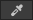
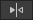

Tile Palette editor reference
You can use different features and tools in the Tile Palette editor window to create and edit tile palettes and the way you paint on tilemapsA GameObject that allows you to quickly create 2D levels using tiles and a grid overlay. More info
See in Glossary.
To open the Tile Palette window, go to Window > 2D > Tile Palette. If you have created a Tilemap, select it in the Hierarchy window and the Open Tile Palette overlay appears in the Scene view. Select the Open Tile Palette in the overlay to open the Tile Palette window.
Use these tools to paint tiles on a tilemap. Specific instructions on how to use these tools are available on their respective pages.
A: The toolbarA row of buttons and basic controls at the top of the Unity Editor that allows you to interact with the Editor in various ways (e.g. scaling, translation). More info
See in Glossary displaying the palette tools available.
B: The Active Target dropdown menu and overlay toggle buttons.
C: The main window where you view and edit the active tile palette’s contents.
D: The Brush InspectorA Unity window that displays information about the currently selected GameObject, asset or project settings, allowing you to inspect and edit the values. More info
See in Glossary window.
Tile Palette toolbar
Select a tool from the toolbar to when painting on the tilemap for additional properties and effects. You can also use these tools to edit the active tile palette itself by unlocking the tile palette for editing. Refer to each tool’s documentation for more information about their specific uses and features.
| Control | Description | Shortcut key |
|---|---|---|
|
Select tool |
Use the Select tool to select a tile on the Active Tilemap or click and drag over multiple tiles to select more at once. | S |
|
Move tool |
Use the Move tool to move a tile selection made with the Select tool. Note: The Move tool can’t select tiles itself. | M |
|
Paint tool |
Use the Paint tool to select a tile on the tile palette, or click and drag over multiple tiles to select more at once. Then click on the tilemap in the scene to paint with the selected tiles. | B |
|
Box Fill tool |
Use the Box Fill tool to select a tile on the tile palette, or click and drag over multiple tiles to select more at once. Then click and drag the Box Fill tool over the tilemap in the scene to draw a rectangular shape, which is then filled with the selected tile(s) when you release the tool. | U |
|
 Pick Tool |
Use the Pick tool to pick a tile from the tilemap or tile palette, or click and drag over multiple tiles to select more at once. The active tool switches to the Paint tool once you make the selection and you can paint on the tilemap with the selected tile(s). | I |
|
Eraser tool |
Use the Eraser tool to erase tiles by selecting them with this tool. To erase many tiles at once, first click and drag the Eraser tool to a larger size in the tile palette, then paint over tiles you want to erase on the tilemap. | D |
|
Flood Fill tool |
Use the Flood Fill tool to fill a contiguous area of empty cells or identical tiles with the selected tile. Select the tile to use as the fill by selecting it from the tile palette. This tool can’t be used with more than one tile. | G |
| Rotates the active brush counterclockwise. | [ | |
| Rotates the active brush clockwise. | ] | |
|  | Flips the active brush along the x-axis. | Shift+[ |
| Flips the active brush along the y-axis. | Shift+] |
Active Target dropdown menu and overlay buttons
| Control | Description |
|---|---|
|
Active Target |
This displays the current active Tilemap the editor is targeting, and lists the name of available tilemaps in this project. Select from the list of tilemaps to make that tilemap the Active Target. |
|
Brush picks overlay toggle |
Select this to display or hide the tile palette’s Brush Picks overlay in the Scene view. |
 Tile Palette clipboard overlay toggle |
Select this to display or hide the Tile Palette Clipboard overlay in Scene view. |
Active Target dropdown
The following control options are available in the Active Target dropdown and when you select Create New Tilemap.
| Control | Description | |
|---|---|---|
|
Visibility toggle |
Select this to reveal or hide the target tilemap in the Scene view. | |
|
Ping button |
Select this to highlight the target tilemap in the Hierarchy window to help you identify the target tilemap. | |
| Create New Tilemap | Select the type of tilemap you want to create and name it at creation. If you don’t enter a name, Unity names the newly created tilemap as “Tilemap” by default and appends a number to it if there are duplicate tilemaps with the same name. | |
| From Tile Palette | Select this to create a tilemap based on the tile dimensions of your active tile palette. This changes the tile dimensions of the parent Grid of the child tilemap to match the tile palette. This ensures that the tiles of the tile palette fits the newly created tilemap. | |
| Rectangular Tilemap | Select this to create a default rectangular tilemap. | |
| Hexagonal Point Top Tilemap | Select this to create Hexagonal Point Top tilemap. | |
| Hexagonal Flat Top Tilemap | Select this to create Hexagonal Flat Top tilemap. | |
| Isometric Tilemap | Select this to create an Isometric tilemap. | |
| Isometric Z As Y Tilemap | Select this to create an Isometric Z As Y tilemap. | |
Tile Palette Clipboard overlay
This overlay is a compact version of the Tile Palette editor’s main editor window in the SceneA Scene contains the environments and menus of your game. Think of each unique Scene file as a unique level. In each Scene, you place your environments, obstacles, and decorations, essentially designing and building your game in pieces. More info
See in Glossary view. It mirrors the main editor window’s tile palette and toggles. Changing the active tile palette in one window also changes it in the other window. Use this overlay to keep a copy of the tile palette in the Scene view even when you minimize the Tile Palette editor. Note: Closing the Tile Palette editor also closes this overlay.
Main editor window
This section of the window displays the active tile palette, and is where you edit the contents of the tile palette.
| Control | Description | |
|---|---|---|
|
Active Palette |
This displays the current active tile palette and lists the name of available tile palettes in this project. Select from the list of tile palettes to make that tile palette the Active Palette. | |
| Create New Tile Palette | Select this to create a new tile palette. Unity names the created tile palette “New Palette” default and appends a number to it if there are duplicate tile palettes with the same name. | |
|
Edit Tile Palette toggle |
Select this to unlock or lock the Active Palette for editing with the Tile Palette toolbar. | |
 Grid visibility toggle |
Select this to reveal or hide the grid lines in the Tile Palette editor window. This toggle is switched on by default. | |
|
Gizmo visibility toggle |
Select this to reveal or hide gizmos in the Tile Palette editor window. | |
Brush Inspector window
You can find the Brush Inspector window at the bottom of the Tile Palette editor window, and you can use it to change the current active brush and its properties. You can minimize or expand the Brush Inspector by clicking the Brush Inspector visibility toggle, or drag the bottom toolbar upwards to expand it the window.
Use the dropdown menu to change the active brush from the Default Brush to one of the 2D Tilemap Extras package’s Scriptable Brushes.
| Control | Description |
|---|---|
| Default Brush | The default brush with no additional properties. |
| GameObject Brush | Select this brush to instance, place and manipulate GameObjectsThe fundamental object in Unity scenes, which can represent characters, props, scenery, cameras, waypoints, and more. A GameObject’s functionality is defined by the Components attached to it. More info See in Glossary onto the Scene view. |
| Group Brush | Select this brush to pick tiles which are grouped together according to their position and set properties. |
| Random Brush | Select this brush to place random tiles onto a tilemap by selecting from defined Tile Sets while painting onto the tilemap. |
| Line Brush | Select this brush to draw a line of tiles onto a tilemap. |
Refer to the Scriptable Brushes’ respective documentation for more information on their specific properties and usage.
| Property | Description |
|---|---|
| Script | Displays the assigned script Asset that provides a fixed set of APIs for painting on tilemaps. The default is the GridBrush. Users may use or create their own Scriptable Brushes which become available from the dropdown menu. The Script property updates to reflect the current active brush. |
| Flood Fill Contiguous Only | Enable this property to have the Flood Fill tool only affect tiles on a tilemap which are both the same as the targeted tile and are contiguous to each other from the targeted position. When disabled, Flood Fill will change all tiles which are the same as the targeted tile on a tilemap regardless of their position. This only affects the Default Brush. |
| Lock Z Position | Enable this property to change the z-position of the active brush. Disable to prevent any changes to the current z-position of the active brush. |
| Z Position | Only available when Lock Z Position is disabled. Enter the desired z-axis value (only whole numbers) for this brush when painting tiles, which also adjusts the relative heights of tiles on a Z as Y Isometric Tilemap . Refer to Adjusting the Tile height in the Palette for more information. |
| Reset | Select to reset the z-position value back to zero. |
Tilemap Focus overlay
The Tilemap Focus overlay appears in the Scene view while the Tile Palette editor window is opened. Use the Tilemap Focus overlay to focus on a specific tilemap or grid by fading out other GameObjects in the Scene view. This helps to identify specific tilemaps if you are working with many tilemaps to avoid confusion and clutter. The Tilemap Focus overlay only affects the Tile Palette editor’s Active Target tilemap.